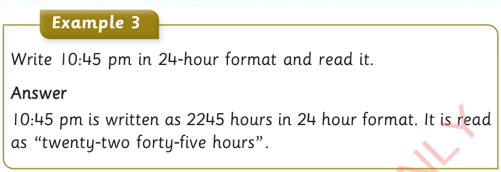

Example 3
Write 10:45 pm in 24-hour format and read it.
Answer
10:45 pm is written as 2245 hours in 24 hour format. It is read as “twenty-two forty-five hours”.
Exercise 3
1.
Change 3:47 am to 24-hour format.
2.
Write 8:00 pm in 24-hour format.
3.
Write 7:00 pm in 24-hour format.
4.
Change the 0400 hours to 12-hour format.
5.
Write 1700 hours in 12-hour format.
6.
Write 2200 hours in 12-hour format.
Exercise 4
1.
Write the following times in the 24-hour format:
(a) 9:00 am
(c) 6:01 pm
(e) 11:00 am
(g) 12:50 am
(i) 8:34 am
(b) 1:00 pm
(d) 3:45 pm
(f) 4:00 pm
(h) 8:00 am
(j) 5:55 am